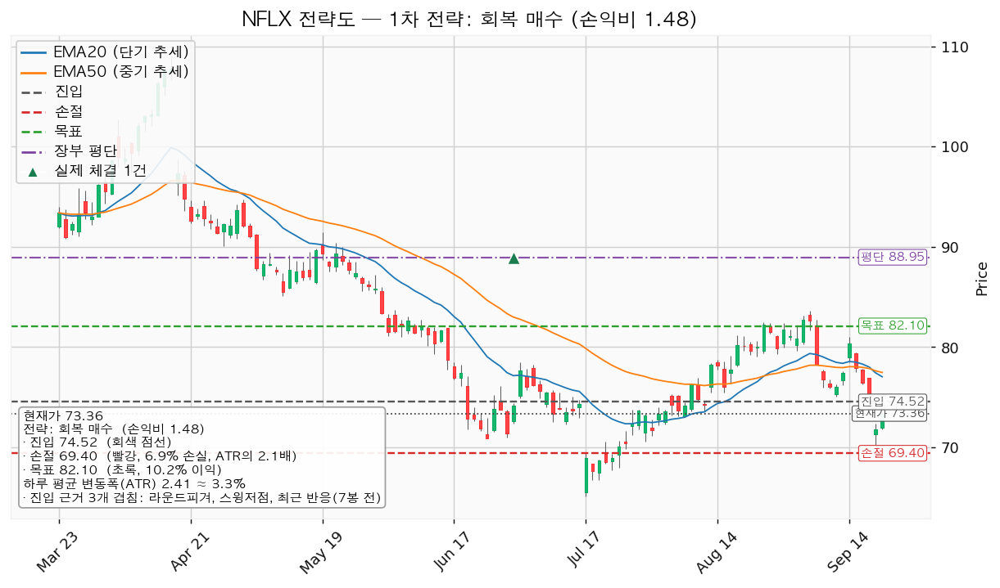
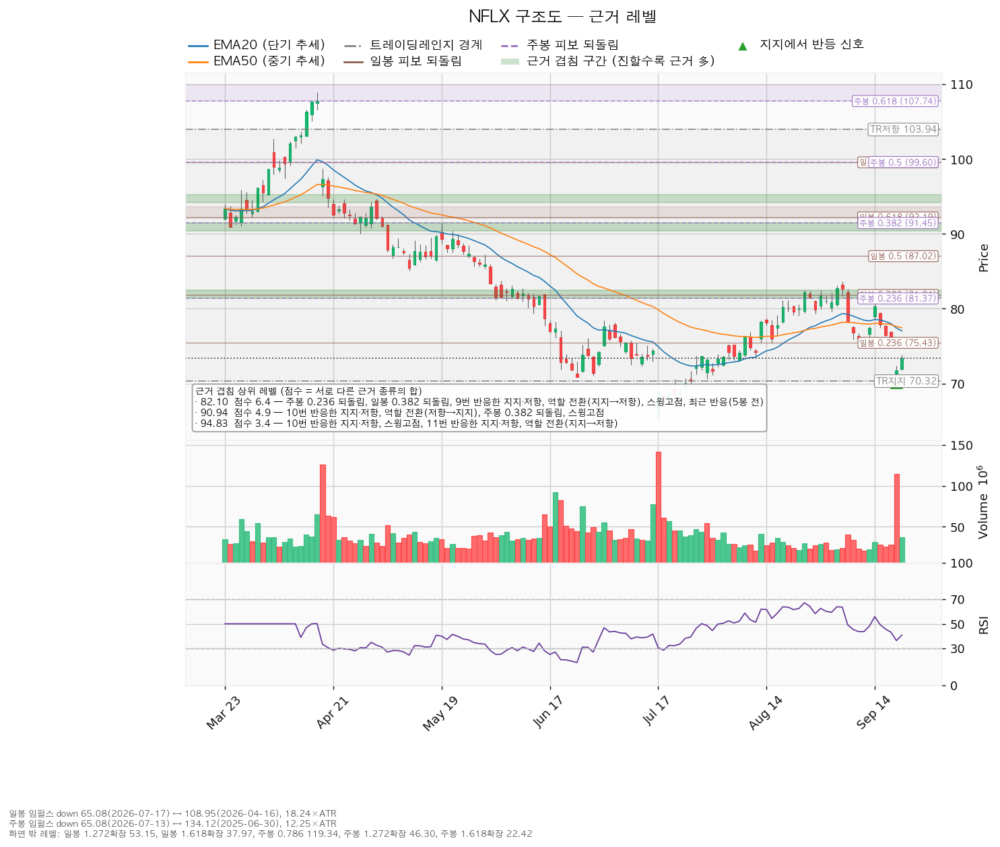
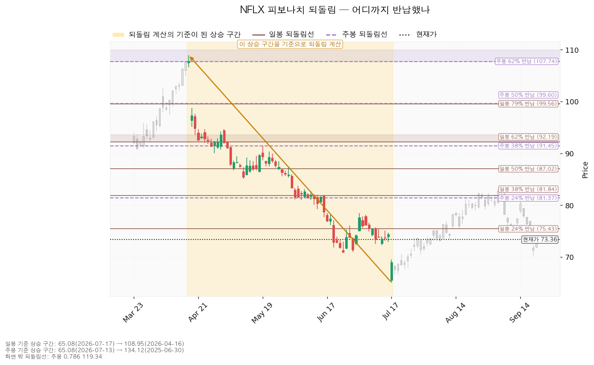
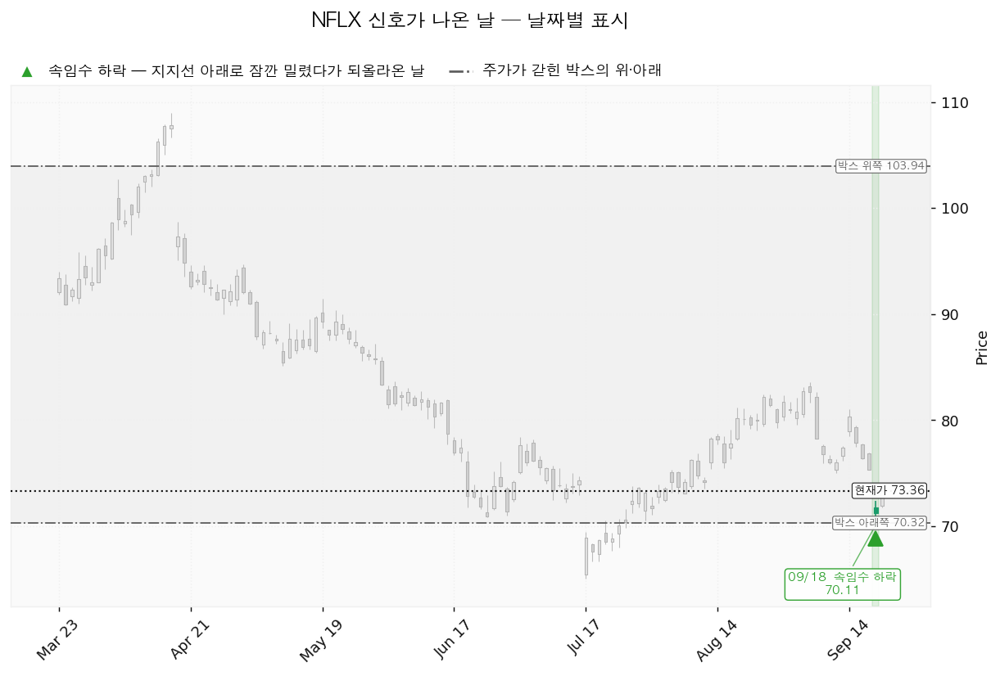

넷플릭스(NFLX)는 월정액 구독과 광고 요금제로 영화·드라마를 인터넷으로 내보내는 미국 스트리밍 기업이며, 직접 만든 콘텐츠와 사들인 콘텐츠를 함께 서비스합니다.
| 구분 | 가격 | 판정 방식 | 현재 상태 |
|---|---|---|---|
| 회복선(진입 조건) | 74.52달러 (+1.58%, 하루 변동폭의 0.48배 위) | 일봉 종가로 회복 | 회복 대기 — 9/21 종가 73.36 |
| 집행 손절 | 69.40달러 (-5.40%) | 장중 저가 터치 | 추가분 미진입이면 의미 없음 — 74.52 종가 회복으로 들어간 경우에만 작동 |
| 관망 종료 기준 | 72.11달러 (-1.70%) | 일봉 종가로 아래 마감 | 유지 중 — 이 가격을 종가로 잃으면 이 리포트의 매수 계획은 끝이며 새 리포트를 기다립니다(보유 10주는 유지) |
| 확인선 | 82.10달러 (+11.91%) | 일봉 종가 돌파 후 되돌림 지지 확인 | 미돌파 — 대표 셋업의 목표와 같은 가격 |
| 폐기선 | 70.32달러 (-4.14%, 하루 평균 변동폭의 1.26배 아래) | 이탈 후 3거래일 내 종가 회복 실패(또는 그 전에 67.91 아래 종가 마감) + 반등에서 저항으로 확인 | 유지 중 — 9/18 저가 70.11로 장중에 한 번 내줬다가 종가 71.79로 되돌아왔습니다 |
재지 못한 항목은 없어 분모는 9 그대로입니다. 통과한 셋은 모두 이번 하락 구간에서 나온 값이고, 미달 여섯은 추세에 관한 항목입니다.
① 당시 걸었던 조건의 성적표. 직전 리포트는 "78.08달러를 일봉 종가로 넘기면 돌파 매수 진입"을 걸었고 그 조건은 충족되지 않았습니다. 대신 관망 종료 기준 74.00달러가 9월 18일 종가 71.79로 이탈됐습니다 — 직전 리포트가 "이 가격을 종가로 잃으면 추가 매수 대기를 끝낸다"고 적어 둔 조건이 그대로 성립했고, 그래서 78.08 대기는 그 자리에서 끝났습니다. 9월 18일은 전일 종가 75.31에서 71.27로 갭하락 출발해 저가 70.11, 종가 71.79로 마감했고 거래량은 20일 평균의 3.7배였습니다. 직전 리포트의 집행 손절 74.88달러는 그날 장중에 지났지만 진입이 없었으므로 체결될 물량이 없었습니다. 목표 90.94달러에는 닿지 않았고, 폐기선 70.32달러는 장중 저가 70.11로 한 번 내준 뒤 종가로 되돌아와 이탈이 성립하지 않았습니다.
② 좌표가 어떻게·왜 움직였나.
| 항목 | 2026-09-18 | 2026-09-22 | 왜 움직였나 |
|---|---|---|---|
| 회복선 | 75.72 | 74.52 | 현재가가 75.31 → 73.36으로 내려오면서 바로 위 겹침이 75.43~76.00 구간에서 74.00~75.03 구간(74달러 라운드피겨·스윙저점·7봉 전 반응, 2.3점)으로 내려왔습니다 |
| 대표 셋업 진입 | 78.08 (돌파 확인형) | 74.52 (회복 확인형) | 78.08은 현재가에서 하루 변동폭 2배 위로 멀어졌고, 엔진이 고른 대표 셋업 자체가 돌파 매수에서 회복 매수로 바뀌었습니다 |
| 집행 손절 | 74.88 (1.44 ATR) | 69.40 (2.13 ATR) | 진입 아래 첫 겹침 구간이 75.43~76.00에서 70.00~70.86으로 내려가, 그 하단 아래로 밀어낸 값도 함께 내려갔습니다 |
| 목표 · 확인선 | 90.94 | 82.10 | 9/18 하락으로 그 위 첫 두꺼운 겹침이 90.41~91.48(4.9점)에서 81.37~82.46(6.4점)으로 바뀌었습니다 — 겹침 점수는 더 두껍고 거리는 절반입니다 |
| 관망 종료 기준 | 74.00 | 72.11 | 74.00이 종가로 이탈돼, 진입선 74.52에서 하루 평균 변동폭 1배 아래인 값으로 내려갔습니다 |
| 폐기선 | 70.32 (2.25 ATR 아래) | 70.32 (1.26 ATR 아래) | 가격은 같고 현재가가 내려와 거리만 좁혀졌습니다 |
| 손익비 | 1:4.02 (손절 1.44 ATR) | 1:1.48 (손절 2.13 ATR) | 목표가 90.94 → 82.10으로 내려온 폭이 진입가가 내려온 폭보다 커서, 손절을 넓힌 것과 겹쳐 손익비가 줄었습니다 |
| 하루 평균 변동폭 / RSI | 2.21 / 43.13 | 2.41 / 40.80 | 갭하락으로 변동폭이 커지고 RSI는 더 내려왔습니다 |
| 평가손익 | -15.34% | -17.53% (-155.93달러) | 보유 10주, 평단 88.9525달러 그대로입니다 |
③ 판단이 바뀐 곳. 결론의 성격은 직전과 같습니다 — 지금 사지 않고 종가 확인을 기다리며 보유 10주는 유지합니다. 바뀐 것은 셋업의 종류(돌파 확인 → 회복 확인)와 받는 손익비(1:4.02 → 1:1.48)입니다. 같은 자리에서 기다리는 것이 아니라 대기 좌표가 한 칸 더 내려갔고, 그 대가로 목표까지의 거리도 20.75%에서 11.91%로 줄었습니다. 직전 리포트에서 정정할 오류는 없습니다.
| 항목 | 값 |
|---|---|
| 셋업 | 회복 매수 — 구조 증명도 회복 확인형 |
| 진입 | 74.52달러 (일봉 종가로 회복한 것을 확인한 뒤) |
| 진입 근거 겹침 | 2.3점 — 74달러 라운드피겨 + 스윙저점(9/10 75.03) + 최근 반응(7봉 전), 구간 74.00~75.03 |
| 집행 손절 | 69.40달러 — 겹침 구간 70.00~70.86(3.0점) 바로 아래로 밀어낸 값 |
| 목표 | 82.10달러 전량 청산 — 겹침 6.4점(주봉 0.236 되돌림 + 일봉 0.382 되돌림 + 9번 반응한 가격 + 지지→저항 역할 전환 + 스윙고점 + 5봉 전 반응) |
| 손익비 | 1:1.48 (손절 폭 2.13 ATR) |
| 엣지 | 모멘텀 — "저항을 종가로 되찾으면 그 방향이 이어진다"는 전제. 자주 틀리고 소수가 크게 맞는 유형이며, 이 성격은 유형의 일반적 특징이지 이 엔진에서 측정한 값이 아닙니다 |
| 순위 배수 | 0.91배 (지수 대비 20일 초과수익 -9.00%, 상대강도선 20일 기울기 -8.90%, 돌파 구간 거래량 최대 3.63배) |
산출된 셋업은 이 하나뿐이라 순위 배수 0.91배가 대표를 바꾼 것은 없습니다. 선정 사유는 손익비 1.48 × 회복 확인형 × 겹침 2.3점이며, 저항을 종가로 되찾은 뒤에만 들어가므로 진입가는 불리한 대신 구조가 먼저 증명됩니다. 손절을 겹침 구간 70.00~70.86 안쪽이 아니라 그 아래 69.40에 둔 탓에 손절 폭이 2.13 ATR로 넓어졌고 손익비도 그만큼 낮아졌습니다 — 구간 안쪽 값을 인용하면 손익비는 좋아 보이지만 지지 시험에 체결됩니다. 이 손절이 이미 구조 아래에 놓인 값이라 구조적 손절 기준 손익비는 따로 산출되지 않았고, 위에 적은 1:1.48이 그 값입니다. 청산은 82.10달러에서 전량이며 트레일링은 걸지 않습니다. T1 75.72달러에서 절반을 덜고 잔여분 손절을 74.52로 올리는 분할안도 함께 산출됐지만, 그 경우 전 구간 손익비가 1:0.85, T1 체결 후 본전 스탑 시 하한이 1:0.12로 떨어지므로 쓰지 않습니다. 확인선 82.10은 목표와 같은 가격이라 분기로 씁니다 — 막히고 되밀리면 82.10달러에서 전량 청산이고, 일봉 종가로 넘기면 상승 확정이며 그때는 이 포지션의 연장이 아니라 새 셋업으로 다시 잡습니다.
현재가 73.36달러는 진입선 아래이므로 지금 추격해서 사지 않습니다. 대기 좌표는 두 개입니다 — 위로는 74.52달러 종가 회복이고, 아래로 눌릴 경우의 되돌림 진입 후보는 70.39달러(70.00~70.86 겹침 구간)입니다. 20일선은 77.03 → 75.58, 50일선은 77.46 → 76.71로 내려올 것으로 계산되는데, 이는 현재가 73.36이 5거래일 동안 그대로 유지될 경우의 이동평균 위치이지 가격 예측이 아닙니다. 계획 진입가 74.52달러는 평단 88.9525달러보다 아래라 평단을 낮추는 매수입니다.

| 단계 | 트리거 | 뜻과 행동 |
|---|---|---|
| 1 관찰 | 일봉 종가가 74.52 아래로 마감 | 구조 이탈 시작이며 되돌아 올라오면 속임수 하락일 수 있어 아직 무효가 아닙니다. 신규 진입만 중단하고 집행 손절은 그대로 둡니다 |
| 2 경고 | 이탈 후 3거래일 안에 74.52를 종가로 회복하지 못함, 또는 그 전에 일봉 종가가 72.11 아래로 마감(하루 평균 변동폭 1배만큼 더 밀림) — 둘 중 먼저 오는 쪽 | 저항 회복 실패 가능성이 우세해집니다. 잔여 비중을 줄이고 반등에서의 반응을 확인합니다 |
| 3 무효 | 반등이 74.52에서 막히고 그 아래로 되밀림 | 셋업 폐기입니다. 포지션을 정리하고 새 구조가 만들어질 때까지 관망합니다 |
집행 손절 69.40달러는 이 3단계 판정과 무관하게 별도로 작동합니다. 장중에 가격을 잠깐 내준 것은 어느 단계에도 해당하지 않습니다 — 9월 18일 저가 70.11달러가 그 예이며, 그날 종가는 71.79로 되돌아왔습니다. 폐기선 70.32달러는 현재가에서 하루 평균 변동폭의 1.26배 아래로 3배 안에 있어 가격 기준으로 판정할 수 있습니다.
상승 전환. 74.52달러를 종가로 회복한 뒤 되돌림에서 지지되고 82.10달러를 종가로 돌파하는 경로입니다. 9월 18일 속임수 하락(70.11) 확인 → 강세 신호 → 되돌림 지지 → 상승 국면 순서이며, 74.52 회복·지지를 확인하고 분할 진입, 82.10 돌파 시 새 셋업으로 비중 확대를 검토합니다.
횡보 지속. 70.32달러를 지키면서 82.10달러 아래 박스가 이어지는 경로이며, 구조는 유지되고 매물 소화에 시간이 걸리는 국면입니다. 신규 진입은 보류하고 셋을 추적합니다 — 지지 테스트마다 매도 거래량이 줄어드는지, 저점이 절상되는지, 오를 때 거래량과 캔들 폭이 늘어나는지. 지금 관측치는 지지 테스트 거래량 증가, 레인지 안 저점 절상, 상승봉 거래량이 하락봉의 1.18배입니다.
시나리오 폐기. 70.32달러를 이탈한 뒤 3거래일 안에 종가로 회복하지 못하거나 그 전에 67.91달러 아래로 종가 마감하고, 반등에서 70.32가 저항으로 확인되는 경로입니다. 매집이 아니라 재분산이었다는 뜻이며 추가 저점 갱신 가능성이 열립니다. 이때 보유 10주를 정리하고 새 매도 절정과 새 박스가 만들어질 때까지 관망합니다.
| 가격대 | 겹침 점수 | 근거 |
|---|---|---|
| 81.37~82.46 | 6.4 | 주봉 0.236 되돌림 · 일봉 0.382 되돌림 · 9번 반응한 가격 · 지지→저항 역할 전환 · 스윙고점 · 최근 반응(5봉 전) |
| 90.41~91.48 | 4.9 | 10번 반응한 가격 · 저항→지지 역할 전환 · 주봉 0.382 되돌림 · 스윙고점 |
| 70.00~70.86 | 3.0 | 70달러 라운드피겨 · 박스 하단 · 스윙저점 |
| 74.00~75.03 | 2.3 | 74달러 라운드피겨 · 스윙저점 · 최근 반응(7봉 전) |
| 77.03~78.00 | 1.6 | 20일선 · 50일선 · 78달러 라운드피겨 |
박스는 180봉 창에서 판정했고(751봉 중), 가격이 창 안에 머문 비율은 95%입니다. 40봉 창은 성립하지 않았고 90봉 창은 성립했으나 180봉이 더 잘 맞았습니다. 하단 70.32 / 상단 103.94이며, 직전 구간(95.67~129.53)에서 아래로 내려와 이 박스로 들어왔으므로 매집과 재분산 중 어느 쪽인지는 박스 안쪽으로 가릅니다. 안쪽 관측은 지지 테스트마다 매도 거래량 증가(9/18 3.7배), 저점 절상, 상승봉 대 하락봉 거래량비 1.18로 판정은 중립입니다. 저점 절상과 상승봉 거래량 우위는 매집 쪽이고, 지지 테스트 거래량 증가는 반대쪽입니다.

되돌림은 일봉·주봉 모두 하락 구간 기준으로 계산됐습니다. 일봉은 4/16 고점 108.95 → 7/17 저가 65.08 하락분에 대한 되돌림이며 0.236이 75.43, 0.382가 81.84입니다. 주봉은 2025-06-30 고점 134.115 → 2026-07-13 저가 65.08 기준이고 0.236이 81.37입니다. 목표 82.10이 두 되돌림선 사이에 놓인 자리라 겹침 점수가 6.4로 두껍습니다.

신호는 하나입니다 — 9월 18일 속임수 하락(저가 70.11). 박스 하단 70.32를 장중에 내줬다가 종가 71.79로 되돌아온 봉이며, 이 엔진이 매수 근거로 쓰는 신호입니다. 다만 신호 하나로 바닥을 확정하지 않고 74.52 종가 회복을 확인한 뒤에 들어갑니다.

후행 주가수익배수는 23.07배(후행 주당순이익 3.18달러), 선행은 19.21배(선행 주당순이익 3.82달러)로 둘이 크게 벌어져 있지 않습니다. 올해 이익 성장률은 +41.67%, 내년은 +6.41%로 추정돼 성장 속도는 올해에서 내년으로 가며 낮아집니다. 목표주가는 45명 평균 93.37달러, 최저 57.00달러, 최고 135.00달러이며 현재가 73.36달러는 최저 목표보다는 위, 평균보다는 아래인 분포 하단부에 있습니다.
하락의 성격은 배수 수축입니다. 내년 추정 주당순이익은 90일간 -0.3%, 최근 30일 -0.1%로 사실상 제자리이고, 올해치도 90일 -0.2% · 30일 0.0%입니다. 추정치가 무너지면서 내린 것이 아니므로 사업 악화로 적지 않으며, 동시에 추정치가 오르는 중도 아니라 값이 아직 안 붙었다고 쓸 근거도 없습니다. 가격만 52주 고점 대비 -41.25% 내렸습니다. 재평가 계기로 확인할 것은 10월 21일 실적입니다.
현금흐름은 적자가 아닙니다 — 2025-12-31 결산 기준 영업현금흐름 +101억 4,927만 달러, 잉여현금흐름 +94억 6,105만 달러이며, 설비투자는 6억 8,822만 달러로 전기 대비 +56.6% 늘었으나 잉여현금흐름은 흑자를 유지했습니다.
상승 여력을 분해하면 평균 목표 93.37달러는 선행 주당순이익 3.82달러 기준 24.45배이고 현재 선행 배수는 19.21배입니다. 내년 이익 성장률이 +6.41%인 것을 감안하면 평균 목표까지의 +27.28%는 대부분 배수 확장에 기댄 값입니다. 이 리포트의 목표 82.10달러는 같은 기준으로 21.50배이며, 컨센서스는 12개월 시계이고 이 셋업은 수 주 시계라 층위가 다릅니다.
| 날짜 | 이벤트 | 볼 것 |
|---|---|---|
| 2026-10-21 | 3분기 실적 | 매출·주당순이익이 컨센서스(올해 3.58달러)를 지키는지, 잉여현금흐름이 흑자를 유지하는지, 설비투자 증가(+56.6%)가 이익으로 돌아오는지 |
다음 실적 이후 구간(4분기·내년 1분기)에 이미 알려진 역풍이 있는지는 이 저장소의 조회 수단으로 확인할 자료가 없습니다. 컨센서스 수치로 추론해 적지 않습니다.
손절 폭에서 역산한 비중은 계좌의 14.6%인데 한 종목 한도가 13%이므로 13%로 제한하고, 이미 보유 중인 10주(계좌의 0.72%)를 빼면 추가 매수에 쓸 수 있는 몫은 계좌의 12.28%인 17,130,404원(환율 1,375.32 기준 약 12,456달러, 74.52달러에 167주)입니다. 이 물량이 69.40달러에 손절되면 855.04달러(1,175,954원, 계좌의 -0.84%)를 잃으며, 현재 열려 있는 손실 총량 0.99%와 합쳐 1.83%로 한도 6% 안입니다. 미디어 테마 합계도 0.72% → 12.99%로 한도 35% 안입니다.
도구 적합성은 문제가 없습니다. 하루 평균 변동폭 2.41달러는 주가의 3.28%로 8% 기준을 밑돌고, 손절 폭 5.12달러는 그 2.13배라 정상적인 하루 등락에 체결될 폭이 아닙니다. 진입에서 목표까지는 3.15 ATR입니다.
최종 판정 — 회복 확인 대기. 손익비 1:1.48(손절 2.13 ATR)로 1을 넘으므로 패스가 아니지만, 조건 점검 9개 중 3개만 통과했고 미달인 여섯(20일선 위·이동평균 정배열·200일선 위·52주 고점 대비·지수 대비 20일 초과수익·상대강도선 신고가)이 전부 추세 항목입니다. 지수를 이기지 못하는 종목을 구조 하나로 사는 셈이므로, 74.52달러 종가 회복이라는 확인을 붙인 뒤에만 167주를 집행합니다. 72.11달러를 종가로 잃으면 이 계획은 끝이고 새 리포트를 기다립니다.
9월 18일 갭하락(전일 종가 75.31 → 시가 71.27, 거래량 20일 평균의 3.7배)의 원인은 종목별 뉴스를 조회할 수단이 없어 이 리포트에서 확인하지 못했습니다. 가격과 거래량으로만 판정했습니다.
ATR(Average True Range)은 하루 평균 변동폭입니다. RSI는 최근 상승·하락 폭의 비율로 과열·침체를 보는 0~100 지표이며 50이 중립입니다. EMA(지수이동평균)는 최근 가격에 가중치를 더 준 이동평균선입니다. 속임수 하락(spring)은 지지선을 잠깐 뚫고 내려갔다가 같은 날 되돌아 올라오는 움직임입니다.